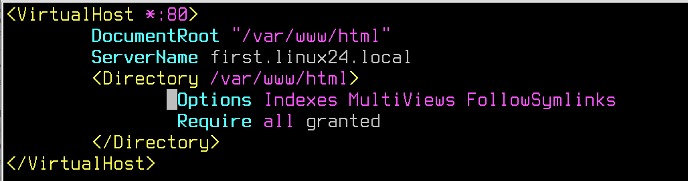
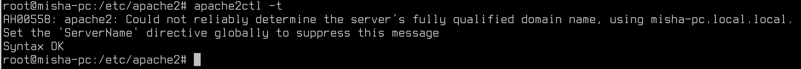
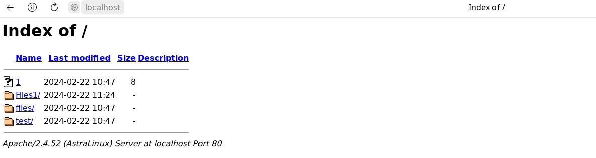
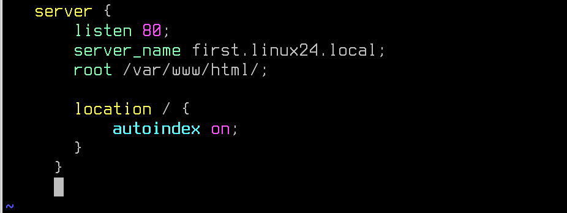
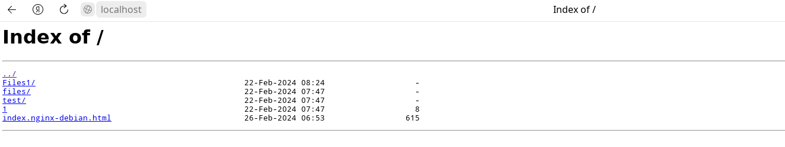
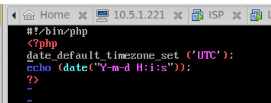

Лабораторная работа №3. Усложнённый материал по итогам видеурока №3.
<---- Обратите внимание на консольный сервер в левой части экрана, вам следует использовать этот сервер для выполнения лабораторной работы
Цель работы
Познакомиться с настройкой веб-серверов на базе Apache2 и Nginx.
Оборудование, ПО:
Виртуальная машина под управлением ОС Astra Linux 1.7 в режиме защищенности "Воронеж".
Ход работы:
Целью данной лабораторной работы является ознакомление с настройкой веб-серверов на основе Apache2 и Nginx. В ходе работы мы узнаем, как устанавливать и настраивать эти два популярных веб-сервера на базе ОС Astra Linux.
Общий обзор
Прежде чем погрузиться в различия между Apache и Nginx, давайте бегло взглянем на предысторию каждого из этих проектов.
Apache
Apache HTTP Server был разработан Робертом Маккулом в 1995 году, а с 1999 года разрабатывается под управлением Apache Software Foundation — фонда развития программного обеспечения Apache. Так как HTTP сервер это первый и самый популярный проект фонда, его обычно называют просто Apache.
Веб-сервер Apache был самым популярным веб-сервером в интернете с 1996 года. Благодаря его популярности у Apache сильная документация и интеграция со сторонним софтом.
Администраторы часто выбирают Apache из-за его гибкости, мощности и широкой распространенности. Он может быть расширен с помощью системы динамически загружаемых модулей и исполнять программы на большом количестве интерпретируемых языков программирования без использования внешнего программного обеспечения.
Nginx
В 2002 году Игорь Сысоев начал работу над Nginx для того чтобы решить проблему C10K — требование к ПО работать с 10 тысячами одновременных соединений. Первый публичный релиз был выпущен в 2004 году, поставленная цель была достигнута благодаря асинхронной event-driven архитектуре.
Nginx начал набирать популярность с момента релиза благодаря своей легковесности (light-weight resource utilization) и возможности легко масштабироваться на минимальном железе. Nginx превосходен при отдаче статического контента и спроектирован так, чтобы передавать динамические запросы другому ПО, предназначенному для их обработки.
Администраторы часто выбирают Nginx из-за его эффективного потребления ресурсов и отзывчивости под нагрузкой, а также из-за возможности использовать его и как веб-сервер, и как прокси.
А что есть в Astra Linux, и зачем это сетевому администратору?
В Astra Linux есть как Nginx, так и Apache2. Для работы можно выбрать любой инструмент.
А умение работать с веб-сервером поможет вам при внедрении различных веб-приложений, например, Zabbix из темы прошлой лабораторной работы или множество других прикладных приложений, которые могут быть полезны - NextCloud, GrayLog и другие.
Приступим к Apache2
- Установим веб-сервер Apache2:
apt install apache2 - После установки Apache2 перейдем в первый конфигурационный файл - /etc/apache2/apache2.conf. Это файл с основными опциями Apache2, для начала работы нам потребуется отредактировать единственный, но критический параметр: Это AstraMode, и его нужно выключить.
- После отключения AstraMode, перезагрузить веб-сервер:
systemctl restart apache2 - Откроем файл /etc/apache2/site-enabled/000-default.conf. Удалим его содержимое и заменим своими: 
Что мы наделали?
Сделали VirtualHost (виртуальный хостинг нашего сервера) на стандартном для протокола HTTP порту 80.
DocumentRoot - информация для администраторов, ровно как и ServerName. Можно не указывать, но в большинстве примеров и форумов такие строчки требуются.
Directory - уже не просто так. Явно указали директорию, где будут опубликованы файлы нашего веб-сервера.
Немного отойдем от темы
Стоит сказать, что между веб-сервером и файловым проводником довольно много общего.
- Оба веб-сервер и файловый проводник предоставляют доступ к файлам и ресурсам.
- Как и файловый проводник, веб-сервер позволяет пользователям просматривать и управлять файлами и папками.
- И веб-сервер, и файловый проводник имеют пользовательский интерфейс, позволяющий пользователям взаимодействовать с файлами и данными.
- Подобно тому, как файловый проводник показывает иерархическую структуру файлов и папок на компьютере, веб-сервер отображает иерархию веб-страниц и других ресурсов.
- Оба инструмента позволяют пользователям выполнять различные действия с файлами, такие как загрузка, удаление, обновление и просмотр (в случае веб-сервера, конечно, если исполняемый код веб-приложения это способен).
А что там под Directory еще написано?
- Options Indexes - это директива конфигурации веб-сервера Apache, которая позволяет отображать список файлов и папок, если в запрашиваемой директории отсутствует индексный файл (например, index.html). Если эта опция включена, то пользователь увидит список файлов и папок, находящихся в запрашиваемой директории, что может быть полезно при просмотре содержимого папки через браузер.
- MultiViews - эта директива конфигурации Apache позволяет веб-серверу автоматически выбирать правильный документ на основе имени запрашиваемого файла и типа содержимого. Например, если запрос делается на file.php, а такого файла нет, но есть file.html и file.txt, то MultiViews позволит веб-серверу выбрать наиболее подходящий файл для отображения.
- FollowSymlinks - эта директива позволяет веб-серверу следовать символическим ссылкам (symbolic links), что позволяет создавать ссылки на файлы и папки, находящиеся в других местах файловой системы, и при этом сохранять доступ к ним через веб-сервер.
Require all granted
Директива "Require all granted" в Apache2 используется для указания, что доступ к ресурсу или директории должен быть разрешен для всех пользователей без каких-либо дополнительных ограничений. По сути, это директива, которая позволяет разрешить доступ ко всему контенту в указанной части конфигурации Apache2 для всех пользователей без каких-либо дополнительных ограничений на авторизацию.
После настроек, проверим конфигурацию
apache2ctl -tКоманда выше проверит конфигурационные файлы Apache2 на синтаксис и укажет на ошибки, если они будут.
Перезапустите Apache2.
systemctl restart apache2Затем, перейдите каталог /var/www/html, оттуда потребуется удалить файл index.html, и наполнить директорию различными каталогами, файлами и т.п.
Посмотрим, что получилось?
Сайт готов! Теперь его можно использовать как сервер-дистрибютор, для организации удобного доступа и хранения файлов с общим доступом.
А как сделать такое же на Nginx?
Для начала, если работаете на сервере, где уже был Apache2, его нужно:
Удалить -
apt purge apache2Или выключить -
systemctl disable --now apache2- Установим Nginx:
apt install nginx -y - Проверить, что он работает можно сразу. Даже не потребуется выключать AstraMode.

- Конфигурация нашего сервера - /etc/nginx/sites-enabled/default. 
- Проверить, что конфигурация написана без ошибок -
nginx -t - Нам остается только перезагрузить Nginx и отправиться проверять:
systemctl restart nginx
Практическая работа
- На полученной виртуальной машине установите и настройте веб-сервер (любой, какой будет удобнее):
- Директория веб-сервера - /var/www/html/out
- Порт работы сервера - 8088
- Сайт предоставляет доступ к двум файлами:
- index.html, где указано "Privet from server!"
- date.php с содержимым: 
- Убедитесь, что сервер корректно показывает содержимое index.html, а также текущее время через date.php.
Дополнительная информация:
После завершения работы, для проверки выполнения работ - выполните команду
checker_new_system3